IDLE
Lote integrado; revisão final pendente
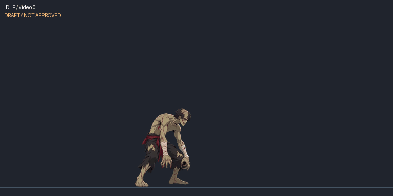
Hunched breathing and head movement
COMBAT
Lote integrado; revisão final pendente
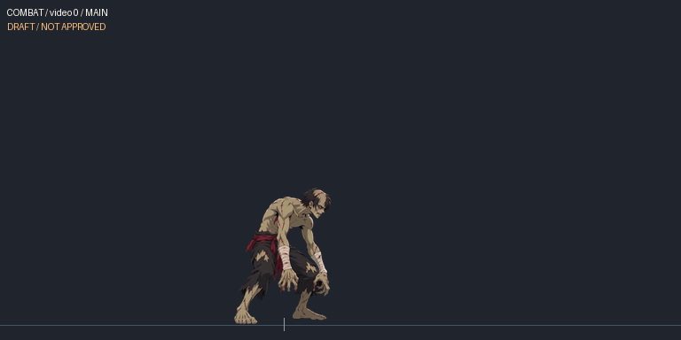
Single neutral guard frame from original idle
WALK_FORWARD
Lote integrado; revisão final pendente
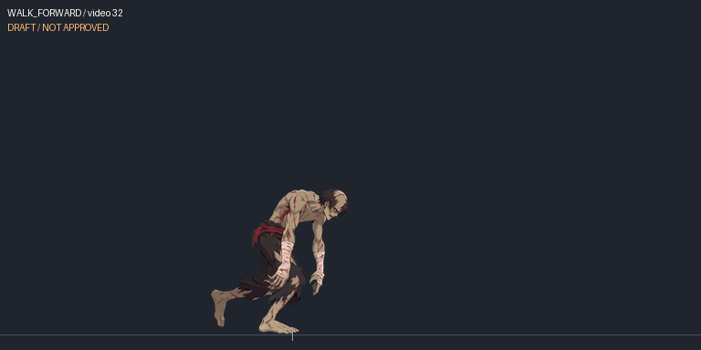
Forward stagger with alternating leg support
WALK_BACK
Lote integrado; revisão final pendente

Backward stagger; support foot and cycle seam need registration
CROUCH
Lote integrado; revisão final pendente
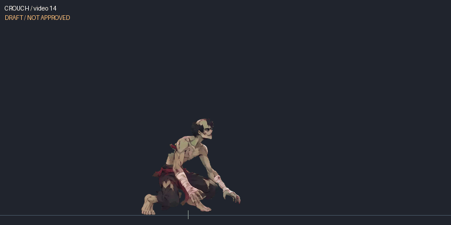
Body descends to hands-and-knee low posture
RISE
Lote integrado; revisão final pendente
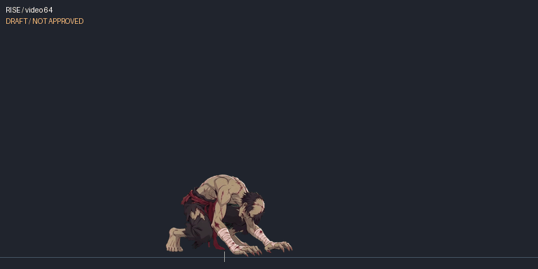
Actual recovery from low posture to standing
JUMP
Lote integrado; revisão final pendente
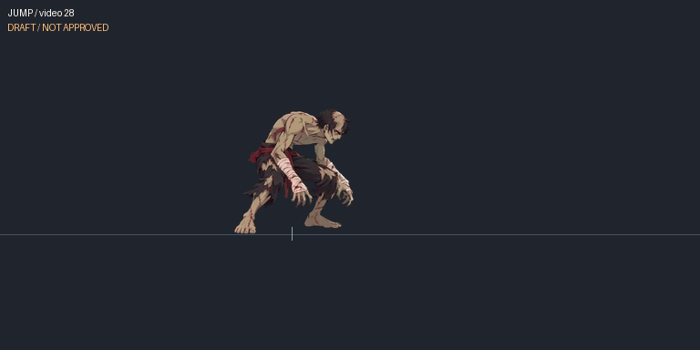
Crouched impulse followed by takeoff
FALL
Lote integrado; revisão final pendente
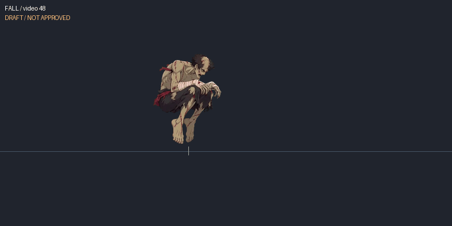
Airborne folded legs followed by descent
DASH
Rascunho; runtime antigo rejeitado
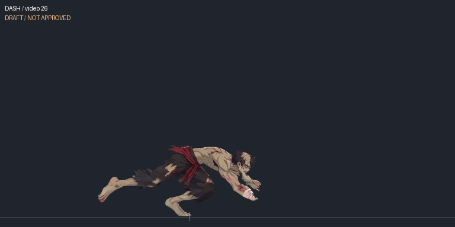
Forward low running lunge
BACKDASH
Rascunho; runtime antigo rejeitado
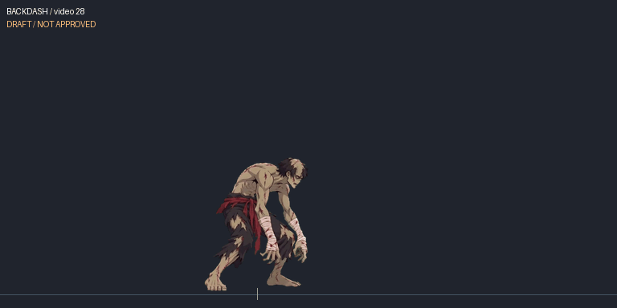
Hop and low recoil before returning to guard
LAND
Lote integrado; revisão final pendente
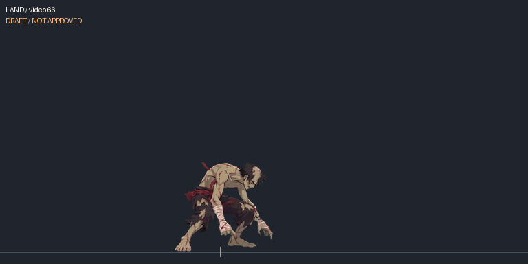
Crouched landing and torso recovery
LIGHT_JAB
Lote integrado; revisão final pendente
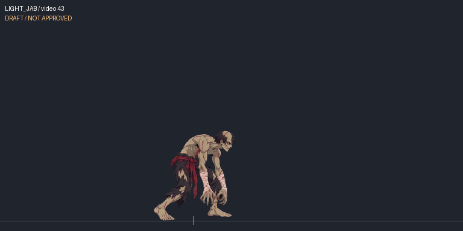
Real extended forward claw/straight-arm strike
MEDIUM_KICK
Rascunho; runtime antigo rejeitado
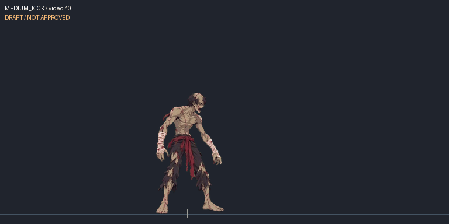
Original M is a shoulder/body lunge; no extended kicking leg visible
HEAVY_STRAIGHT
Rascunho; runtime antigo rejeitado
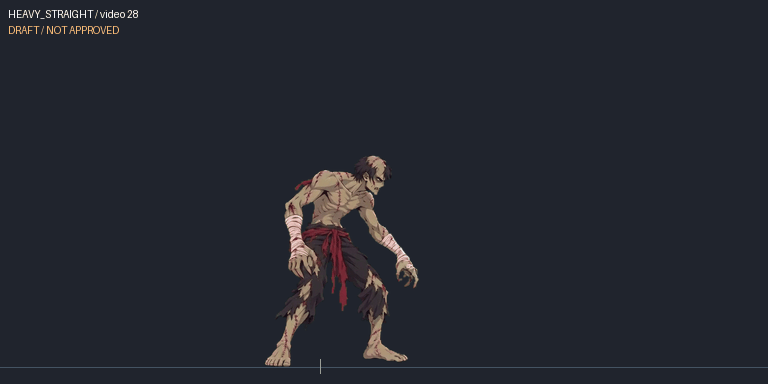
Overhead two-hand preparation followed by forward/downward swing
DEFENSE_STAND
Rascunho; runtime antigo rejeitado
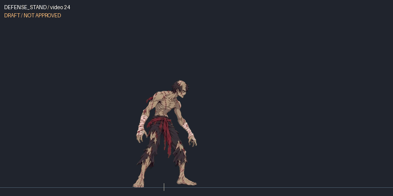
Standing raised forearm guard; hold phase ends in defensive pose
DEFENSE_CROUCH
Lote integrado; revisão final pendente
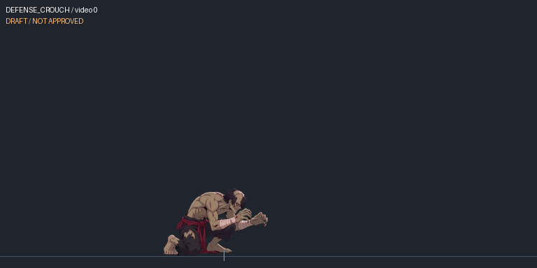
Kneeling forearm guard; hold phase ends defensively
HIT_STAND
Rascunho; runtime antigo rejeitado

Candidate initial standing recoil before knockdown begins
HIT_CROUCH
Rascunho; runtime antigo rejeitado
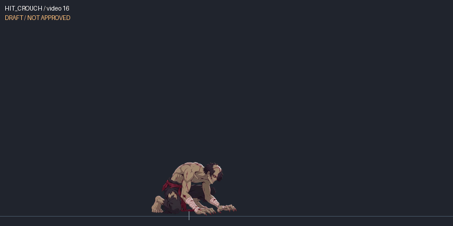
Low hit reaction rises and recoils before crouch recovery
HIT_AIR
Rascunho; runtime antigo rejeitado
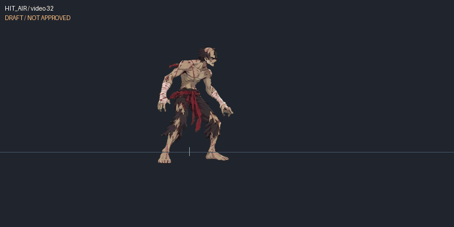
Visible backward airborne tumble and landing
KNOCKDOWN
Rascunho; runtime antigo rejeitado
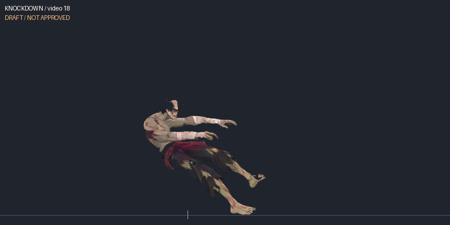
Complete backward collapse to prone posture
GROUNDED
Rascunho; runtime antigo rejeitado
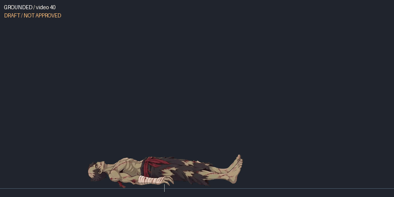
Actual prone interval between collapse and getup
GETUP
Rascunho; runtime antigo rejeitado
Original prone-to-standing spring recovery
CROUCH_LIGHT
Rascunho; runtime antigo rejeitado
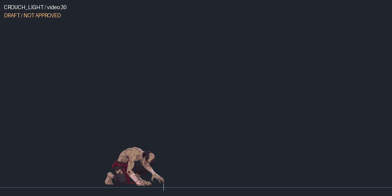
Low extended claw jab with real arm reach and recovery
CROUCH_MEDIUM
Rascunho; runtime antigo rejeitado
Low spinning sweep with extended leg
CROUCH_HEAVY
Rascunho; runtime antigo rejeitado
Original 2H rises to a chest-up recoil/roar; no raised striking arm visible
JUMP_LIGHT
Rascunho; runtime antigo rejeitado
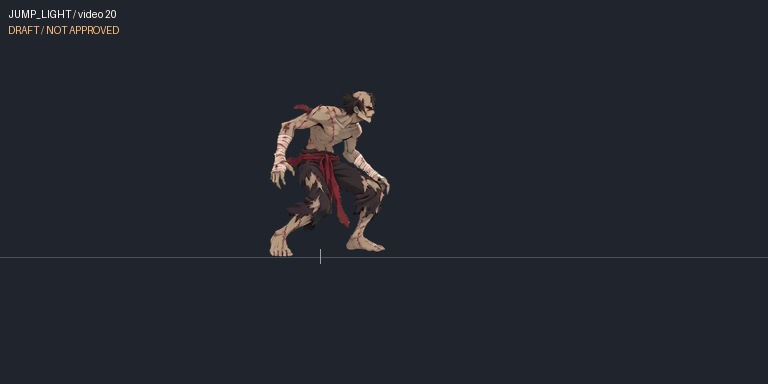
Real airborne high kick and leg recovery
JUMP_MEDIUM
Rascunho; runtime antigo rejeitado
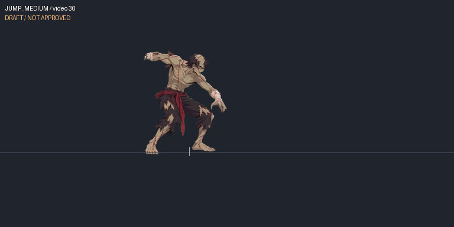
Airborne extended-arm strike with bent legs
JUMP_HEAVY
Rascunho; runtime antigo rejeitado
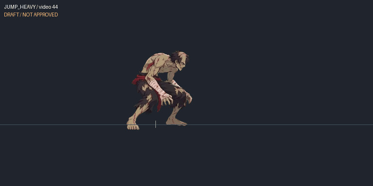
Overhead airborne two-hand attack; source has abrupt zoom
DEFENSE_AIR
Lote integrado; revisão final pendente
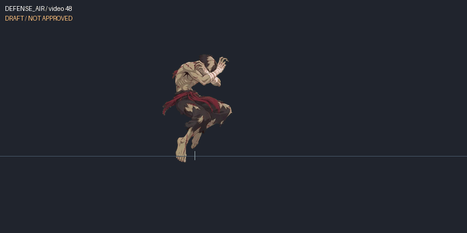
Raised crossed arms with bent airborne legs; defensive hold endpoint
ULTRA_BEAM
Rascunho; runtime antigo rejeitado
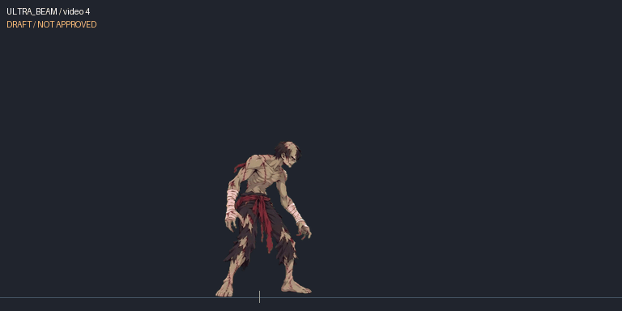
Roar, forward hand strike, overhead swing and ground slam
SPECIAL_ENERGY
Rascunho; runtime antigo rejeitado
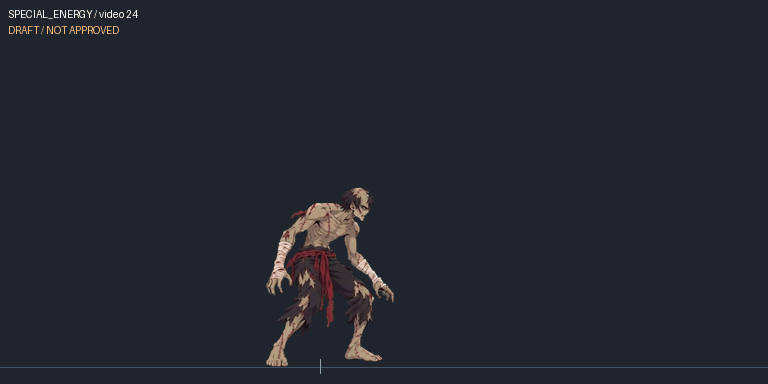
Low ground lunge and hand strike
THROW_GRAB
Rascunho; runtime antigo rejeitado
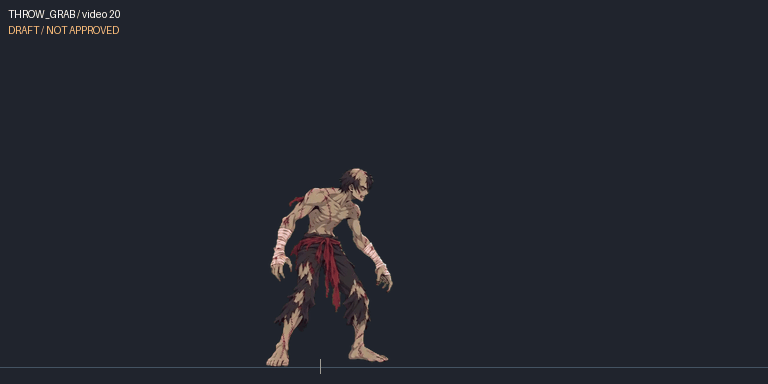
Reach and grab of source-video opponent
THROW_TOSS
Rascunho; runtime antigo rejeitado
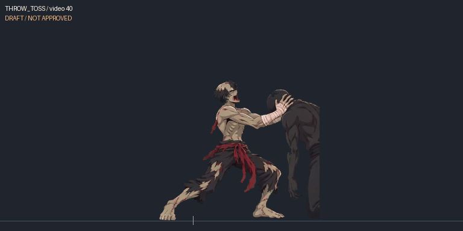
Grapple/bite and release; no distinct toss shown in these source phases
SPECIAL_S2
Rascunho; runtime antigo rejeitado
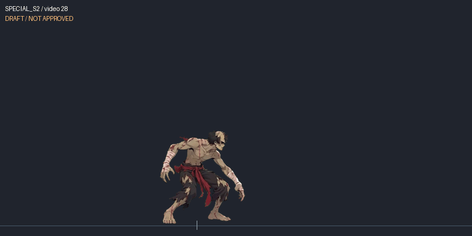
Rising airborne claw swing and landing
SPECIAL_S3
Rascunho; runtime antigo rejeitado
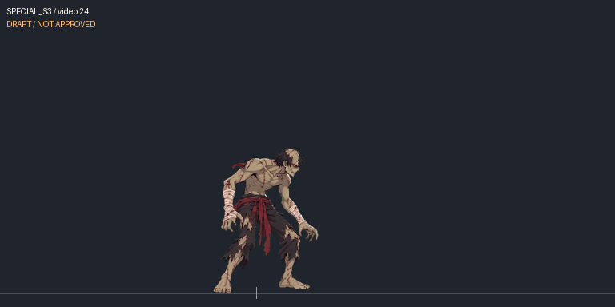
Chest-open windup and long forward claw strike
SPECIAL_S4
Rascunho; runtime antigo rejeitado
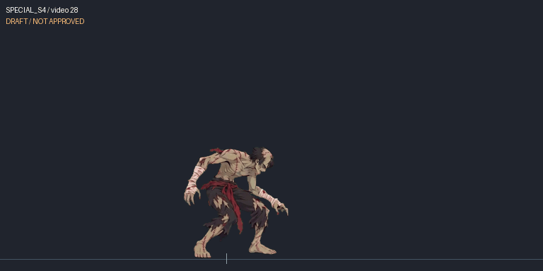
Full backward flip and recovery
SUPER_WAVE
Rascunho; runtime antigo rejeitado

Multi-hit punch/knee/overhead slam action
INTRO
Rascunho; runtime antigo rejeitado
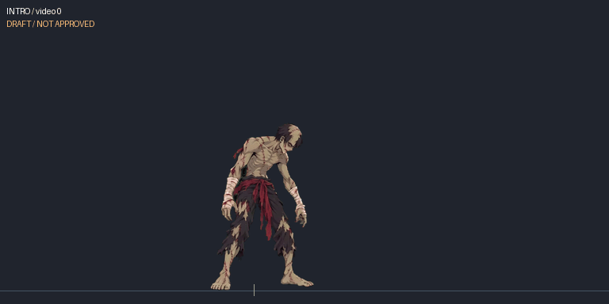
Head turns and torso lowers into zombie guard
JUMP_HEAVY_DOWN
Rascunho; runtime antigo rejeitado
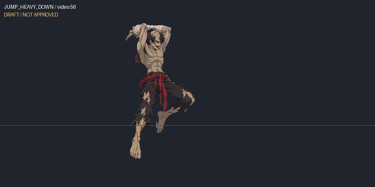
Candidate downward phase of original jH overhead attack
VICTORY
Rascunho; runtime antigo rejeitado
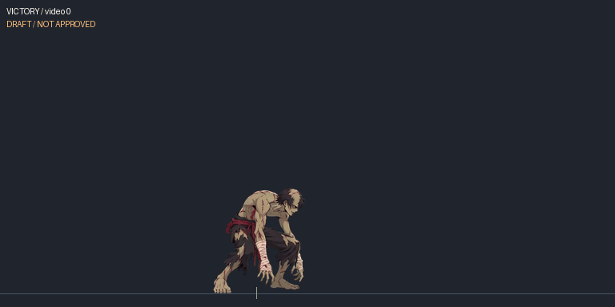
Body straightens and head tilts into victory posture
DEFEAT
Rascunho; runtime antigo rejeitado
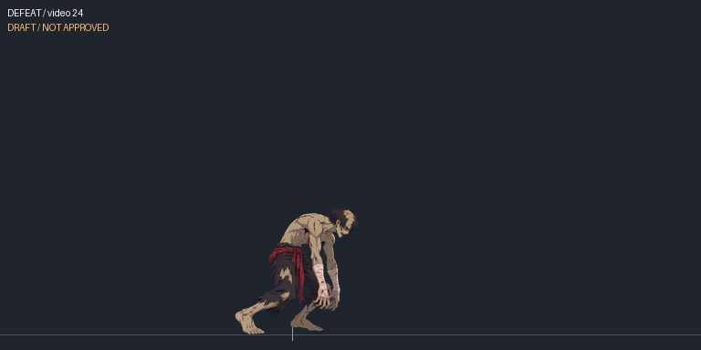
Kneeling collapse and persistent defeated posture
TAUNT
Rascunho; runtime antigo rejeitado

Head turn and raised beckoning claw before recovery